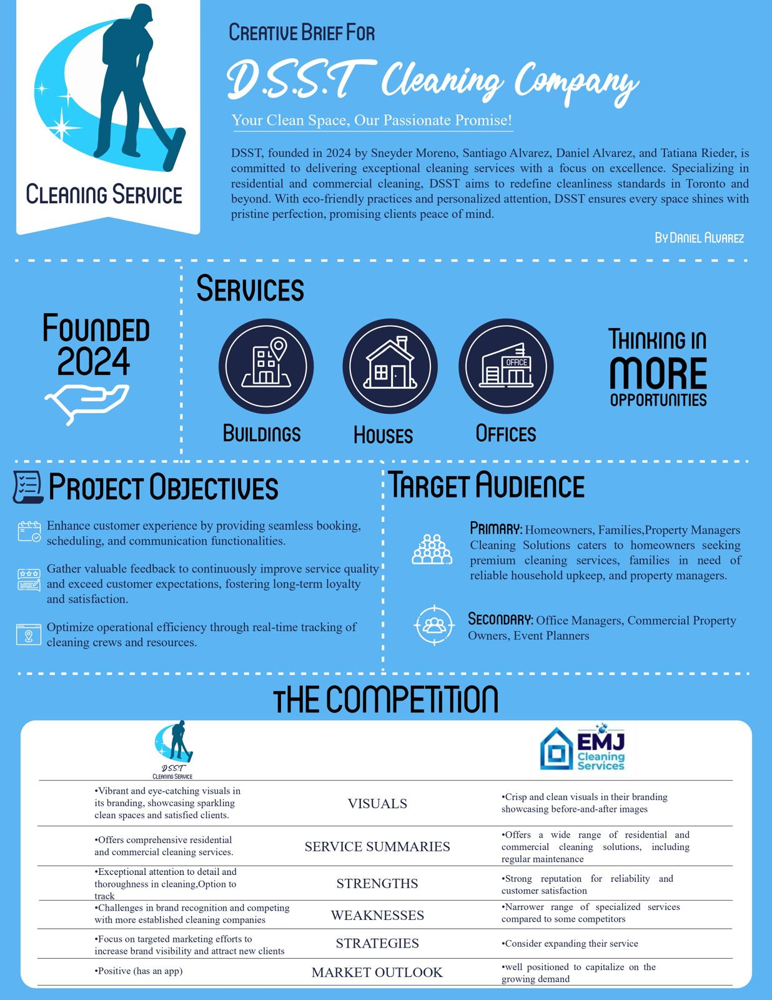
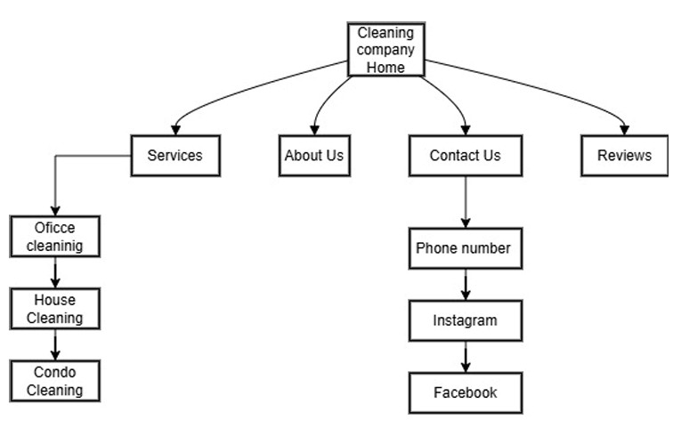
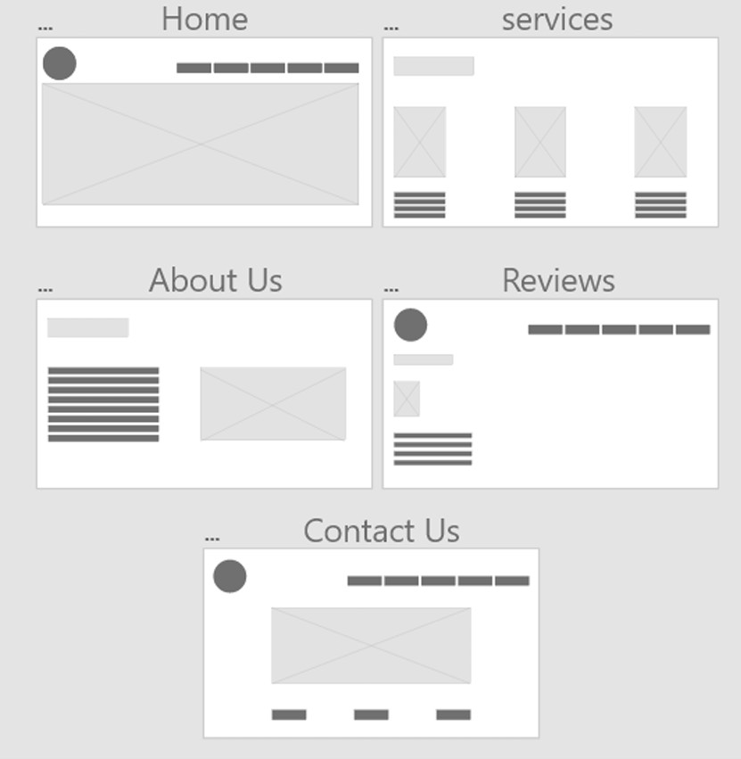
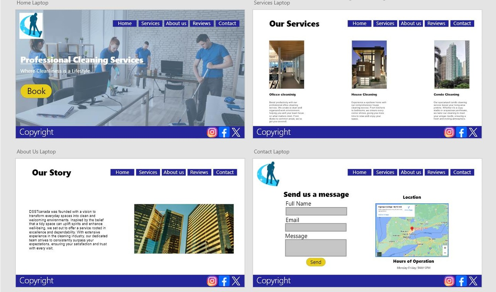

← Back to selected work
UX/UI Case Study
DSST Cleaning Service
UX/UI Designer responsible for research, competitive review, sitemap, user journey, wireframes and high-fidelity design.
An end-to-end UX/UI case study.
This academic project explored how a cleaning-service website could make service discovery, booking and communication easier. The process moved from research and structure into wireframes and a high-fidelity interface.
Research & brief

Information architecture

Wireframes to high fidelity


Key learning
Starting with research and structure made later visual decisions easier to justify and helped connect the final interface to user and business needs.